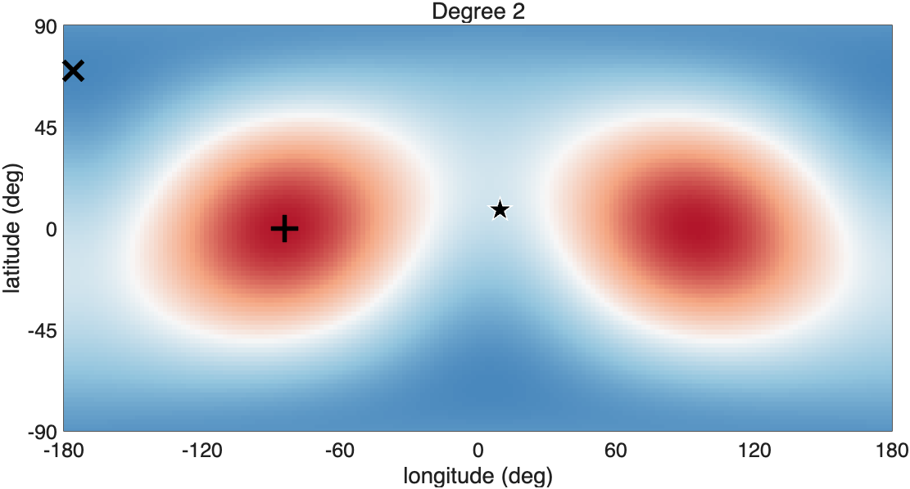
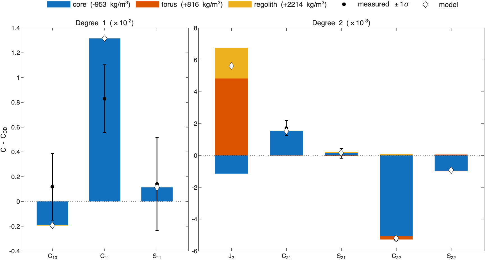
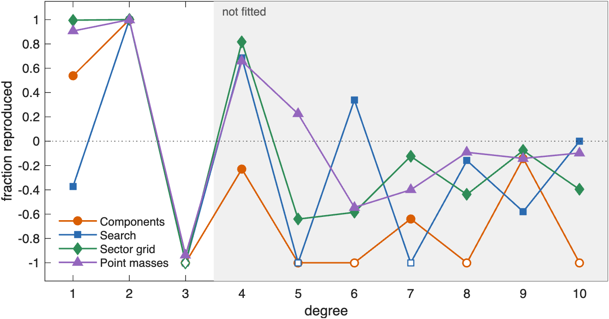

ROB-DATA6: Dimorphos#
Last edited October 30, 2026
In ROB-DATA6 all three moments of inertia are 32 to 62σ larger than at constant density: mass lies farther from the center than in a uniform body, so the inside is light and the outside dense. Degree 2 adds that mass has moved toward the ends of the y-axis. A model with a light core toward −x, a dense equatorial torus and a dense crust fits with 6 parameters. The point masses tie with it in AIC. They also make a light inside and a dense outside, but put the light region at the center, elongated along x, instead of to one side. Here ROB's exact values and the GRASS point side with the point masses. Over degrees 4 to 10, which no solution was fitted to, they reproduce 46% where the components do worse than constant density (−0.72), and they predict the GRASS acceleration to 0.7% against 4.1%.
| Kind | Model | Parameters | Reduced χ² | p | AIC | Exact values, degrees 1–3 | Exact values, degrees 4–10 |
|---|---|---|---|---|---|---|---|
| Point masses | 2674 points | 7.8 | 0.11 | 1.00 | 16.6 | 0.92 | 0.46 |
| Components | core, torus, layer | 6.0 | 0.39 | 0.97 | 16.7 | 0.69 | −0.72 |
| Sector grid | 2 × 4 × 8 | 9.2 | 0.04 | 1.00 | 18.7 | 0.96 | 0.50 |
The best solution of each kind, by AIC (bold: the lowest). Parameters: the effective number of parameters. Exact values: the fraction of ROB's exact coefficients a solution reproduces, over the fitted degrees 1–3 and over degrees 4–10, which were not (1: all; 0: no better than constant density; negative: worse). See How to read these pages.
1. What the measurements show#

| Measurement | C − C_CD | 1σ | In σ | What it says |
|---|---|---|---|---|
| +3 | center of mass toward +x | |||
| −79 | higher: mass toward the equator | |||
| +4 | mass toward +x in the north, −x in the south | |||
| −97 | mass toward ±y more than ±x | |||
| −11 | mass toward longitudes −45° and 135° | |||
| +62 | mass farther from the x-axis | |||
| +32 | mass farther from the y-axis | |||
| +56 | mass farther from the z-axis |
The measurements more than 3σ from constant density.
The moments of inertia are the strongest signal: +62σ, +32σ, +56σ. Each moment is the sum of mass times squared distance from an axis, so all three larger means mass farther from the center: a light interior under a dense exterior. Degree 2 cannot see this, since it holds only differences of the moments. It shows that the move is uneven: 97σ lower (mass toward the ends of the y-axis) and 79σ higher (toward the equator). The center of mass is 1.3 m toward +x, 3σ.
2. Where the mass is#

Degree 2 puts the excess at the ends of the y-axis and the deficit near the poles and along x. The model built for this package uses what each measurement asks for. A light core is placed on the x-axis by its χ² profile: it takes mass from along x, making lower, and moves the center of mass to +x. A dense torus in the equatorial plane makes higher. A dense surface layer puts mass far from the center, raising all three moments.
3. How well each solution fits#

The point masses (7.8 effective parameters) and the model with components (6) are 0.1 apart in AIC: a tie. The point masses match every measurement within 1σ; the model with components misses and by about 1.8σ, its center of mass too far toward +x. The sector grid fits as closely with 9.2 effective parameters and ranks 2 behind.
4. The model with components#

| Component | Shape and place | Relative density (kg/m³) | Density (kg/m³) | Mass anomaly (kg); makes most of |
|---|---|---|---|---|
| core | sphere, radius 30 m, 54 m from the center toward lat 8°, lon −175° | −953 ± 371 | 430 | ; −93σ, +16σ |
| torus | torus, ring radius 71 m, tube radius 11 m, axis 0° from z, center 0 m from the center | +816 ± 66 | 2199 | ; −68σ, −4σ |
| regolith | surface layer, 0 to 2 m deep | +2214 ± 345 | 3597 | ; −27σ, +2σ |
Background density 1383 kg/m³ (bulk density 1594 kg/m³). Makes most of: the component's part of each coefficient in units of its 1σ.

- The light core (−953 ± 371 kg/m³, 30 m radius, 54 m toward −x) makes nearly all of .
- The dense torus (+816 ± 66 kg/m³, ring 71 m, tube 11 m) makes most of .
- The dense crust (+2214 ± 345 kg/m³, 2 m thick) and the background 211 kg/m³ below the bulk density move mass outward and raise the moments.
5. Point masses and components side by side#

| Solution | Mass moved (% of M) | Excess centered at (m) | Deficit centered at (m) |
|---|---|---|---|
| Components | 5.9 | (6, −1, −1) | (−14, −1, 2) |
| Sector grid | 9.1 | (12, 2, 0) | (0, 0, −1) |
| Point masses | 11.3 | (4, 0, 1) | (−4, 0, 0) |
| Correlation | Components | Sector grid | Point masses |
|---|---|---|---|
| Components | 1.00 | 0.25 | 0.12 |
| Sector grid | 0.25 | 1.00 | 0.48 |
| Point masses | 0.12 | 0.48 | 1.00 |
Mass moved: the mass above the bulk density, as a percentage of the mass of the body. Excess and deficit centers are from the center of figure. Correlation: of the relative densities of the solutions, 8.3 m cell by 8.3 m cell.
The point masses and the model with components agree on the structure and disagree on where the light region is. Both take mass from along the x-axis inside the body and put it farther out. The model with components does it with one light core on the −x side. The point masses use a light region about 60 m long along x, centered on the center of figure, under an exterior denser than the bulk everywhere. Their relative densities correlate only 0.12, the lowest between the two in any package. The sector grid agrees with the point masses: a light inner shell, a denser outer one (correlation 0.48). The point masses move the most mass of any solution in the six packages, 11% of the mass of the body.
6. Against ROB's exact values and the GRASS point#

In the fitted degrees the sector grid and the point masses reproduce 96% and 92%, the model with components 69%. The difference is degree 1: a light core 54 m to one side moves the center of mass more than the hidden interior does (54% of degree 1 against 91% for the point masses). No solution reproduces degree 3 (each about −1): it is fitted, but its 1σ is far larger than its anomaly. Over degrees 4 to 10 the sector grid and the point masses reproduce 50% and 46%, and the model with components does worse than constant density (−0.72). At degree 4 the sector grid and the point masses reproduce 82% and 67% and the model with components does not.
| Solution | Acceleration minus ROB's (% of ROB's) | Angle from ROB's |
|---|---|---|
| Components | +4.1% | 3.0° |
| Sector grid | +1.6% | 2.3° |
| Point masses, sensitivity weighting | −0.7% | 2.5° |
| Point masses, equal weighting | +1.6% | 2.5° |
| Constant density | −1.8% | 2.6° |
The acceleration each solution predicts at the GRASS surface point minus ROB's, in magnitude (% of ROB's magnitude) and direction, on the full-resolution shape model.
The GRASS point lies at the +x end of the body. Constant density predicts the acceleration 1.8% low. The point masses predict it to 0.7%, the sector grid to 1.6%. The model with components is 4.1% high: its dense torus and crust put too much mass near the +x surface. The exact values and the GRASS point both favor a light interior near the center over one to the side.